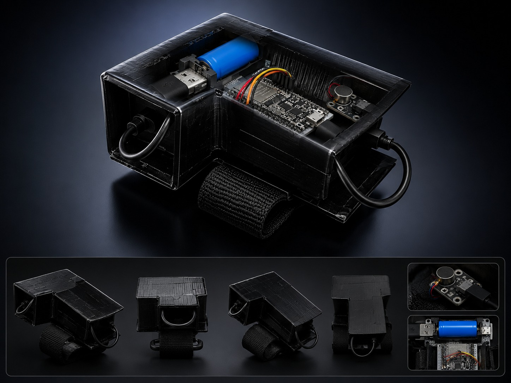
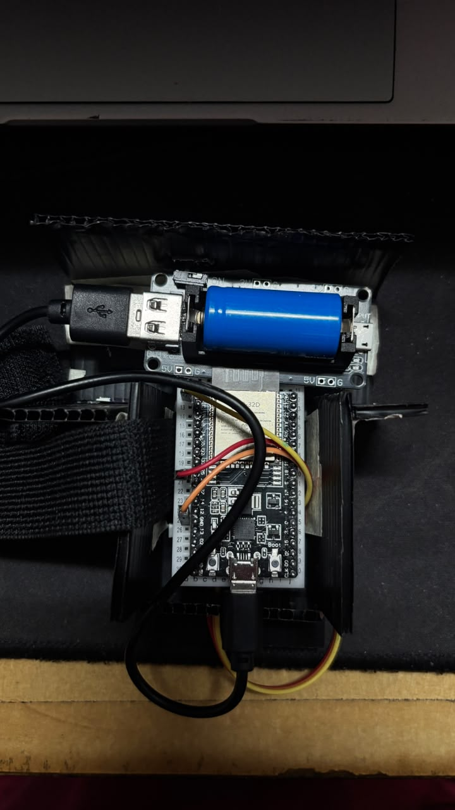
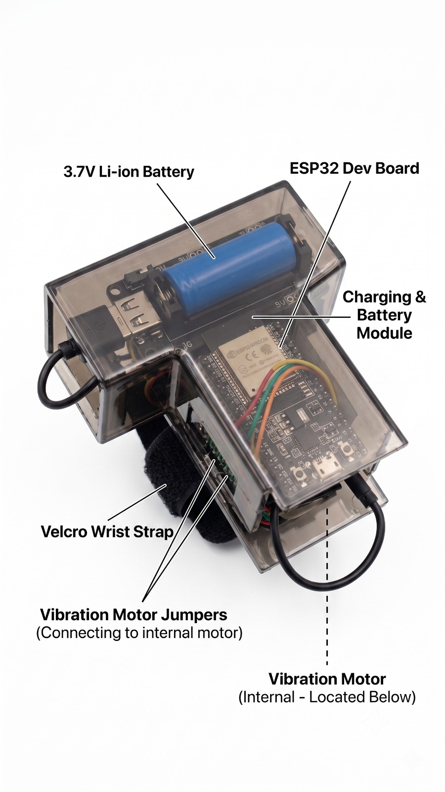

Webcam hand tracking
Uses a normal camera with OpenCV and MediaPipe to detect the user's hand without special tracking hardware.
EEE4948 Integrated Design Project
A webcam-based virtual mouse that turns hand movement into real computer actions, with a wearable vibration module that confirms clicks, scrolling, zooming, and task switching.


Product Overview
The product is designed as an alternative input method for situations where a physical mouse or touchpad is not ideal, such as presentations, messy desks, shared workspaces, or hands-free interaction. A standard RGB webcam captures the hand, the software recognizes gestures in real time, and the computer responds as if a normal mouse action was performed.
The wearable ESP32 haptic unit adds physical confirmation to a touchless interface. Instead of wondering whether a click or task-switch command has been triggered, the user receives vibration feedback on the wrist.
Key Features
Uses a normal camera with OpenCV and MediaPipe to detect the user's hand without special tracking hardware.
Maps gestures into cursor movement, left click, right click, drag/select, scrolling, zooming, and task switching.
The ESP32 wearable drives a vibration motor so the user can feel important actions being triggered.
Smoothing, gesture thresholds, cooldown timing, and hold duration help reduce accidental activation.
Main Functions
Basic Components
How It Works
A webcam captures live hand movement and OpenCV prepares the video frames.
MediaPipe identifies 21 hand landmarks, including fingertip and wrist positions.
Gesture logic checks distances, finger states, movement direction, hold time, and cooldowns.
PyAutoGUI converts the recognized gesture into real cursor and keyboard actions.
PySerial sends a command to the ESP32 so the wearable vibration motor confirms the action.
Prototype Gallery

Product Value
Provides an alternative control method when the user cannot comfortably use a mouse, touchpad, or keyboard.
Uses a common webcam for recognition, keeping the tracking setup simple and accessible.
Haptic vibration reduces uncertainty by giving a clear tactile response when actions are triggered.
The same pipeline can be extended with calibration, custom gesture datasets, comfort testing, and improved enclosure design.
Design Considerations
Camera resolution, frame rate, motion blur, lighting, and accidental activation can affect accuracy. The system responds with smoothing, thresholds, cooldown periods, and gesture hold timing so commands only trigger when the gesture is clear and stable.
Future Improvements